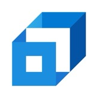

WORK EXPERIENCE
Xometry
Data Scientist Intern
Boston, MA/Remote | Jun 2026 - Dec 2026
- Consolidated 20 dbt models into one unified data model, cutting model count 95% and simplifying pipeline maintenance and analytics dependencies
- Developed internal sourcing dashboard (2,000+ lines) as the team's source of truth, engineering staging tables to pre-aggregate data and cutting load time 50%
- Delivered AI-driven skill auto-generating Confluence analysis reports from data used by the team as an ongoing reference
- Deployed LLM-based pipeline to analyze 250+ partner feedback entries for thematic patterns, replacing manual review
- Launched internal job bidding platform for partners, tracking bid activity and engagement across 50+ partners
Texas A&M University - Department of Statistics
Student Assistant (Data & AI)
College Station, Texas | Jan 2026 - May 2026
- Automated Markdown-based content workflows to restructure course materials, reducing preparation time by 50%
- Automated end-to-end data pipelines for course data collection and reporting, lifting operational efficiency by 40%
 Front Page
Front Page
Data Science Intern
Bangalore, India | Mar 2025 - Jun 2025
- Engineered real-time BigQuery behavioral-analytics pipelines processing 1M+ daily events, powering personalization signals for 200K+ active users, lifting engagement 20%
- Trained user segmentation/clustering models with MLflow-tracked pipelines, powering targeted recommendations across 8 content verticals, boosting notification open rates 12%

ScalerData Science Intern
Bangalore, India | Jun 2024 - Dec 2024
- Automated data pipelines using Python, cutting reporting latency by 40%
- Conducted A/B experiments, improving conversion rate from 7% to 14%
- Built an LLM-based SQL generator using APIs that converted text into queries for 10+ tables
 Publicis Groupe
Publicis Groupe
Data Science Intern
Noida, India | Apr 2023 - Jun 2023
- Trained time-series models achieving 80% accuracy on financial forecasting
- Reduced RMSE by 15% through feature engineering for volatility prediction
- Analyzed 10 years of financial data for actionable investment insights